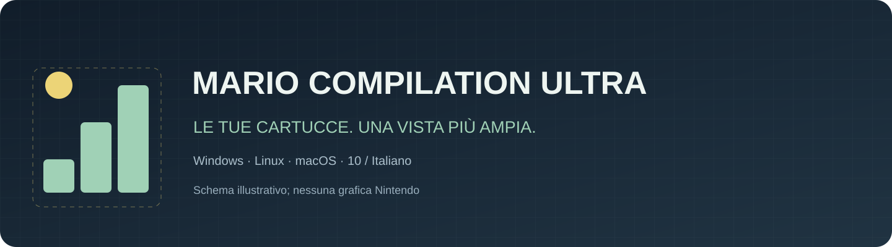
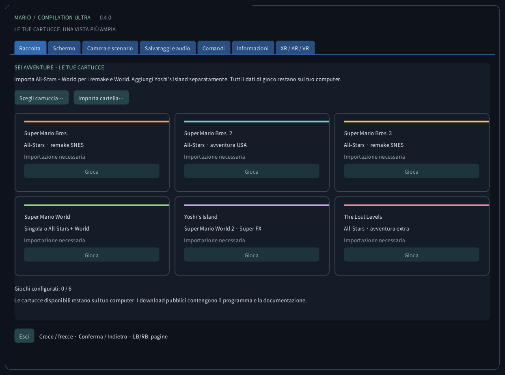
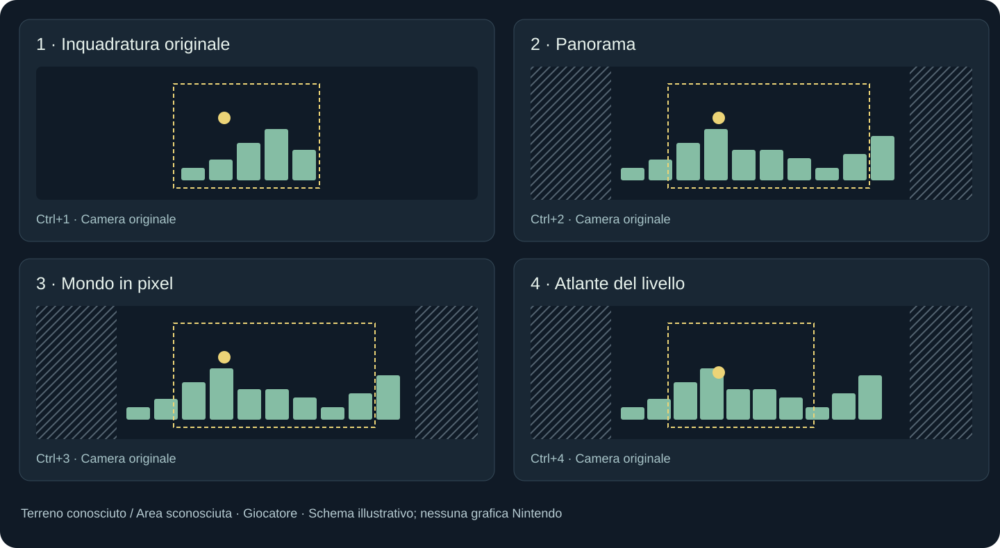
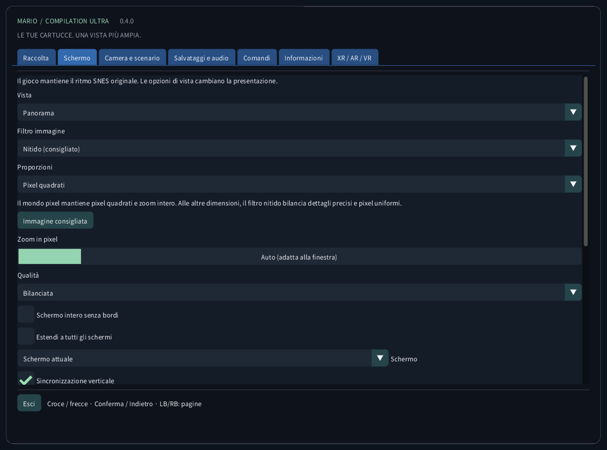
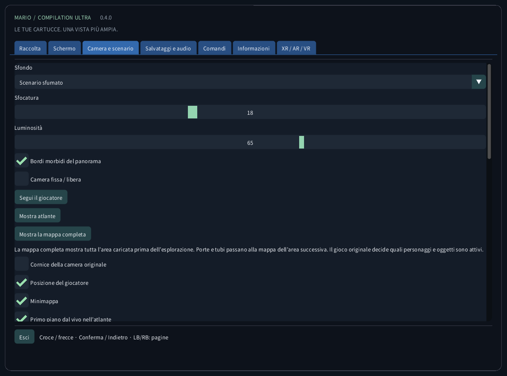
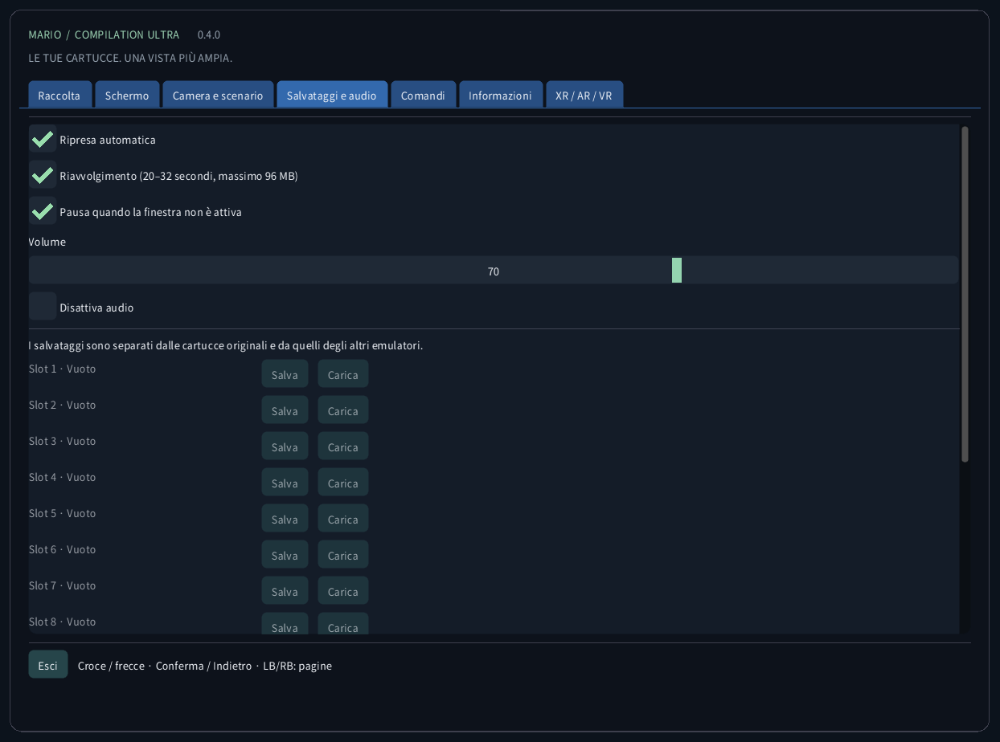
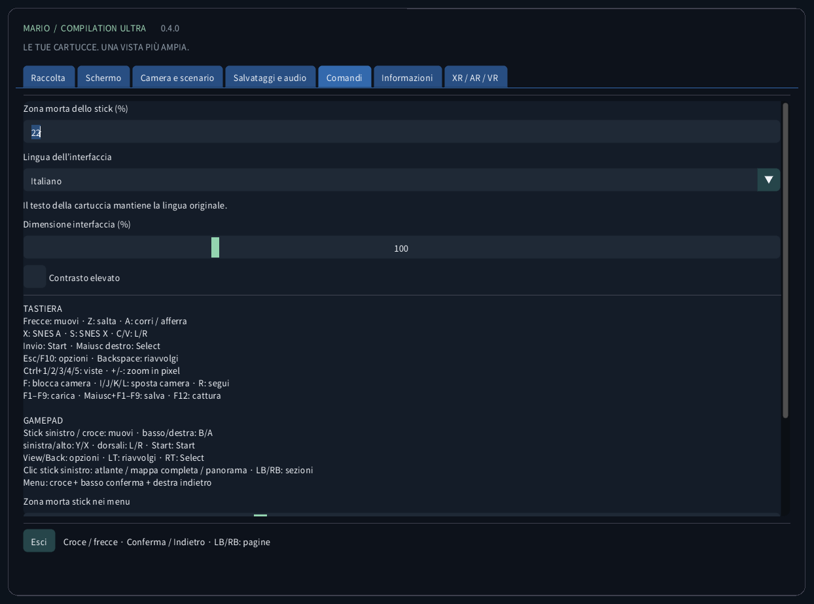
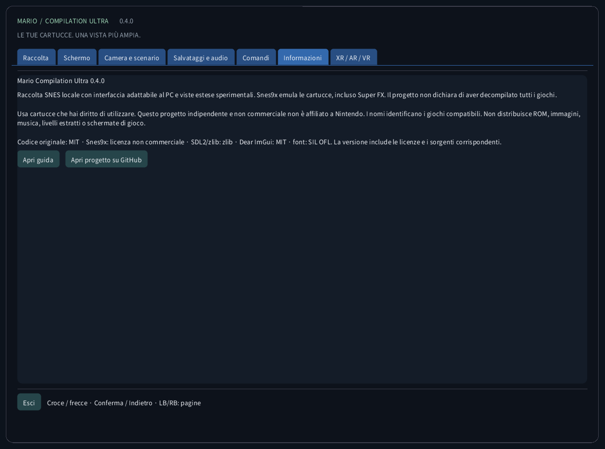
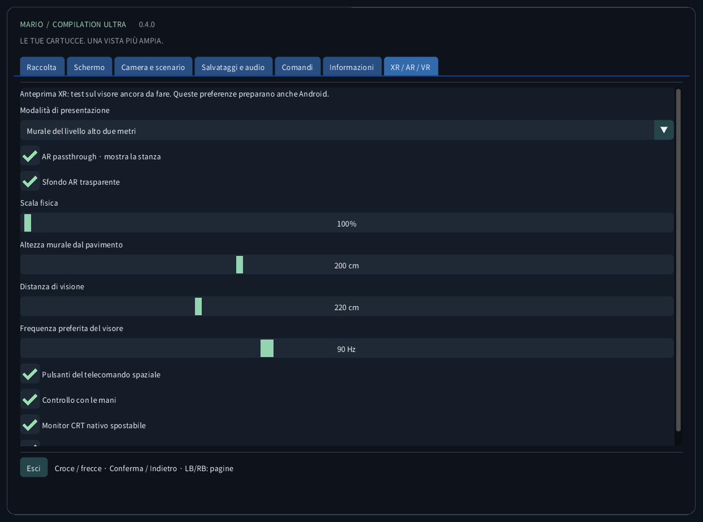

Mario Compilation Ultra 0.4.0
Raccolta SNES locale con interfaccia adattabile al PC e viste estese sperimentali. Snes9x emula le cartucce, incluso Super FX. Il progetto non dichiara di aver decompilato tutti i giochi.
Download e avvio dal desktopDownload e avvio dal desktop
- Scarica il pacchetto per il tuo computer ed estrai tutto lo ZIP. Mantieni insieme eseguibile, SDL, risorse e guide. Windows: apri MarioCompilationUltra.exe. Linux: avvia Play.sh. Mac: apri l’app.
- Importa i tuoi file .sfc, .smc o ZIP con una sola cartuccia tramite Scegli cartuccia, Importa cartella o trascinamento. Il selettore apre la cartella dati dell’app. Le cartucce compatibili inserite direttamente lì vengono rilevate al prossimo avvio.
- All-Stars + Super Mario World include Mario Bros. 1, Mario Bros. 2 USA, Mario Bros. 3, World e The Lost Levels. Aggiungi Yoshi’s Island separatamente. Scegli Gioca, poi Invio o Start nel titolo originale; premi di nuovo se è in corso una demo.
Windows: esegui Install-Windows.ps1 per copiare il pacchetto completo in Programs dell’utente e creare il collegamento. Linux: esegui Install-Linux.sh per registrare questa cartella nel menu e sul desktop. Mac: sposta l’app in Applicazioni e crea un alias. Non spostare la cartella portatile scelta.
Windows: powershell -NoProfile -ExecutionPolicy Bypass -File .\Install-Windows.ps1 Linux: sh ./Install-Linux.sh

Pacchetti e verifica
- Windows x64: avvio locale dal desktop ed esecuzione cartucce verificati; anche test automatici.
- Linux x64: build e controlli senza ROM automatici. Gioco su un desktop Linux fisico non testato.
- macOS Intel x64 e Apple Silicon arm64: SPERIMENTALE, NON TESTATO SU UN MAC FISICO. I controlli automatici coprono build e interfaccia senza ROM. Firma ad hoc, senza notarizzazione; controller, audio, grafica e Gatekeeper non verificati su hardware reale.
Modalità di vista

Immagine consigliata: Panorama, zoom Auto, filtro Nitido, pixel quadrati, bordi morbidi e sfondo ambientale attenuato. Schermo → Immagine consigliata non cambia lingua, audio o salvataggi. Sono disponibili anche Pixel esatti, Morbido e TV 4:3. Il mondo pixel mantiene zoom intero e pixel quadrati. Le linee seguono le righe del gioco e si disattivano sotto 2× per evitare il moiré.
Mappa completa (Ctrl+5) mostra tutto il terreno dell’area caricata dal primo fotogramma giocabile in tutti i sei giochi, senza esplorazione. Porte e tubi cambiano mappa; le stanze separate non vengono unite. Mario World include entrambi i piani di terreno presenti. Una freccia indica il giocatore e, se c’è spazio, appare una vista ravvicinata. Restano le quattro viste precedenti, che fuori da World accumulano il terreno osservato. Personaggi, piattaforme mobili ed effetti conservano la simulazione e la portata di attivazione originali. Le arene speciali senza mappa mantengono la vista nativa. Premi lo stick sinistro: Atlante → Mappa completa → Panorama.
I profili di memoria e la selezione automatica All-Stars riguardano le edizioni USA elencate. Un’edizione riconosciuta senza profilo verificato usa l’inquadratura originale. Tradurre l’interfaccia non traduce storia o grafica della cartuccia commerciale. Non si dichiara una nuova decompilazione nativa dei cinque giochi.
| CRC32 | SNES |
|---|---|
f84305b1 | All-Stars + World (US) |
925637c7 | All-Stars (US) |
b19ed489 | Super Mario World (US) |
d138f224 | Yoshi’s Island 1.0 (US) |
cf98ddaa | Yoshi’s Island 1.1 (US) |
Quest VR / AR
Comandi
TASTIERA Frecce: muovi · Z: salta · A: corri / afferra X: SNES A · S: SNES X · C/V: L/R Invio: Start · Maiusc destro: Select Esc/F10: opzioni · Backspace: riavvolgi Ctrl+1/2/3/4/5: viste · +/-: zoom in pixel F: blocca camera · I/J/K/L: sposta camera · R: segui F1–F9: carica · Maiusc+F1–F9: salva · F12: cattura GAMEPAD Stick sinistro / croce: muovi · basso/destra: B/A sinistra/alto: Y/X · dorsali: L/R · Start: Start View/Back: opzioni · LT: riavvolgi · RT: Select Clic stick sinistro: atlante / mappa completa / panorama · LB/RB: sezioni Menu: croce + basso conferma + destra indietro
Salvataggi e audio
Ogni gioco dispone di nove slot, ripresa automatica, SRAM e riavvolgimento limitato. Usa fino a 96 MiB per circa 20–32 secondi. F1–F9 caricano; Shift+F1–F9 salvano. Si verificano CRC, versione del motore e integrità. I salvataggi degli altri emulatori restano separati.
File locali
Questa cartella contiene settings.ini, riferimenti alle cartucce, states/, saves/ e screenshots/. L’importazione non carica online la cartuccia né modifica l’originale. Fai un backup prima di cambiare computer. Gli stati dipendono da cartuccia e motore esatti; SRAM è separata.
Windows: %APPDATA%/ValentinWittwe/MarioCompilationUltra/ Linux: ~/.local/share/ValentinWittwe/MarioCompilationUltra/ macOS: ~/Library/Application Support/ValentinWittwe/MarioCompilationUltra/
--data-dir sostituisce il percorso predefinito. Gli aggiornamenti del collegamento Windows mantengono questa opzione. File locali mostra la cartella effettiva.
Se un gioco richiede ancora l’importazione
Scegli di nuovo la cartuccia se il file è stato spostato o l’unità scollegata. Lo ZIP deve contenere un solo .sfc o .smc, senza cifratura, memorizzato o DEFLATE. Controlla edizioni e intestazioni supportate. Se mancano font o SDL, estrai nuovamente il pacchetto completo.
Galleria dell’interfaccia reale
Le schermate provengono dall’app reale senza cartuccia caricata. I diagrammi usano geometria illustrativa originale, non grafica dei giochi. I download pubblici non includono ROM Nintendo, sprite, musica, livelli estratti o schermate di gioco.






Pacchetti e verifica · 0.4.0
Cinque suite automatiche verificano dati originali, menu, interazione spaziale e rendering. L’interfaccia in dieci lingue viene acquisita in quattro dimensioni. Sei giochi locali sono verificati separatamente. Quest AR/VR e gioco fisico su Mac restano sperimentali e non testati. Consulta il rapporto.
CTest / CI · Report · Build